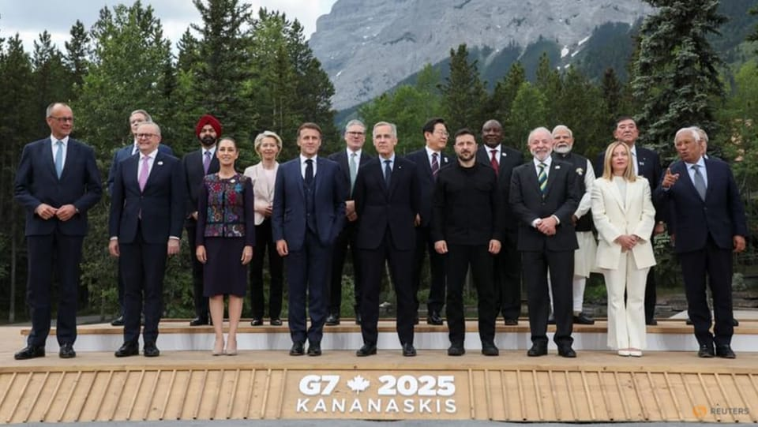

世界苦茶06月21日新闻 | 50条 | 解放军大规模军机绕台

解放军大规模军机绕台 | 台湾大罢免7月26日 | 日本驱逐舰穿过台湾海峡 | 习近平会晤新西兰总理
每天三件事
苦茶数据
美元兑人民币：7.17（昨日7.18，前日7.19）
美元兑日元：145.92（昨日145.24，前日145.29）
上证指数：休市（昨日3359，前日3364）
标普500指数：休市（昨日5967，前日5980）
比特币：103517（昨日104672，前日104841）
布伦特原油：77.01（昨日76.97，前日77.38）
以伊战争
• 伊朗滥用以色列监控设备 ：伊朗正在利用以色列境内的私人安防摄像头收集实时敌情，暴露了这类设备已在全球其他冲突中反复出现的问题。伊朗弹道导弹本周击中特拉维夫多栋高层建筑后，一名前以色列网络安全官员在公共广播电台发出严厉警告：关闭家里的监控摄像头或者更改密码。彭博社引述前以色列国家网络局副局长拉斐尔·弗兰科星期一的讲话说：“我们知道，在过去两三天里，伊朗人一直试图连上摄像头，以了解发生了什么事以及他们的导弹命中了哪里，从而提高精度。”他目前运营着一家名为“蓝色警报”的网络安全危机公司。
• 以军空袭伊朗导弹设施 ：以色列军方说，星期五对伊朗发动新一轮袭击，目标是伊朗西南部的导弹发射器。法新社报道，以色列军方在一份声明中说：“不久前，以色列空军袭击了伊朗西南部的地对空导弹发射装置。”军方声明称，其他袭击针对首都德黑兰、中部城市伊斯法罕和伊朗西部地区。
• 伊外长谴责以色列破坏谈判 ：伊朗外交部长星期五谴责，以色列对伊朗的袭击是对与美国外交努力的“背叛”，并指出德黑兰和华盛顿原本应该就伊朗核计划达成一项“有希望的协议”。法新社报道，伊朗外长阿拉格奇在与欧洲各国外交部长举行会议前，在日内瓦联合国人权理事会上说：“我们是在正在进行的外交进程中遭到袭击的。”阿拉格奇谴责以色列的袭击是“令人发指的侵略行为”。
• 加沙援助点遭袭60死 ：加沙地带民防机构说，以色列军队星期五的袭击导致至少60人死亡，其中31名遇害者是等待领取物资者。这是援助分发点附近发生的一系列致命事件中的最新一起。民防发言人马哈茂德·巴萨尔告诉法新社，在加沙地带南部等待援助时，有五人丧生，另有26人在“纳扎里姆走廊” 的中心地区附近丧生。纳扎里姆走廊是一条以色列控制的狭长地带，将加沙地带一分为二。经过20多个月的战争，饥荒笼罩着整个加沙，成千上万的巴勒斯坦人每天都聚集在那里，希望获得食物配给。
• 伊朗称遭袭期间拒谈核协议 ：伊朗星期五说，在受到以色列攻击期间，不会讨论核计划的未来。与此同时，欧洲试图劝说德黑兰重返谈判，而美国正在考虑是否介入冲突。路透社报道，星期五晚些时候发出空袭警告后，以色列媒体称，初步报告显示，导弹袭击了特拉维夫、内盖夫和海法。白宫星期四说，特朗普将在未来两周内决定美国是否介入伊核冲突，并指出近期可能就伊朗问题展开谈判。
• 伊朗袭击以南部科技园 ：伊朗迈赫尔通讯社星期五报道，伊朗当天清晨袭击位于以色列南部城市贝尔谢巴的一处科技园，伊朗认为那里有多家以色列军方和网络安全机构存在。报道说，这座科技园区内聚集包括英特尔和微软在内的多家知名高科技企业，被称为以色列“网络首都”。另据美国有线电视新闻网报道，贝尔谢巴的一条街道发生多起火灾，这个街道靠近微软办公室所在的科技园区。
• 美盟国商讨以伊局势 ：以色列和伊朗的冲突愈演愈烈，美国国务卿鲁比奥与多个西方主要盟友讨论以伊的战争形势。路透社报道，鲁比奥星期四与英国外交部长拉米会面。当天他还与澳大利亚外长黄英贤、法国外长巴罗，以及意大利外长塔亚尼分别通电话。美国国务院说，鲁比奥和这几个国家外长一致同意，“决不能让伊朗发展或获得核武器”。
• 美军机撤离卡塔尔基地 ：卫星图像显示，原本停放在卡塔尔一重要美国空军基地停机坪上的美国军机已从卫星图像中消失。法新社报道，美国华府正在权衡是否军事介入以色列和伊朗的战事，转移在卡塔尔的美国军机可能是为了保护这些军机免被伊朗空袭。美国卫星公司Planet Labs PBC公布并经法新社分析的卫星图像显示，6月5日乌代德空军基地的停机坪上有近40架军机，包括C-130“大力士”运输机和侦察机。在6月19日拍摄的卫星图像只看到三架军机。
• 伊朗革卫队更换情报首长 ：伊朗伊斯兰革命卫队总司令任命情报机构新负责人。伊朗伊斯兰共和国通讯社星期四报道，伊朗伊斯兰革命卫队总司令帕克普尔当天宣布，任命哈德米为革命卫队情报机构新任负责人。情报机构原负责人卡齐等三名高级将领，在以色列上星期天对伊朗首都德黑兰的空袭中丧命。
中国新闻
• 习近平会晤新西兰总理 ：中国国家主席习近平与访华的新西兰总理拉克森会面时说，中国和新西兰之间没有历史恩怨纠葛，没有根本利益冲突，要相互尊重、求同存异，正确看待和处理两国差异和分歧。这是拉克森2023年底上任以来首次访问中国。拉克森访华，正值太平洋岛国库克群岛与中国签署协议引发新西兰不满，新西兰星期四宣布暂停对库克群岛提供援助。库克群岛今年2月与中国签署一系列协议，涉及深海采矿、区域合作和经济问题，因未事先咨询新西兰，引发新西兰不满。新西兰曾殖民统治库克群岛，双方保持“自由联合”关系。
• 华南多地发洪灾红警 ：受东亚季风影响，中国中南部地区正面临极端降雨引发的洪水威胁，相关部门进入高度戒备状态。综合路透社和新华社报道，中国水利部和气象局星期四晚上发布今年首个山洪灾害红色预警，安徽、河南、湖北、湖南、贵州及广西等地均被纳入预警范围，代表当地发生山洪灾害的可能性很大。今年中国提前在6月初迎来雨季，多地接连遭受严重洪涝灾害。受台风“蝴蝶”叠加影响，广东省肇庆市怀集县上周末起遭遇持续性强降雨侵袭，县城80%以上区域受浸，电力一度中断。当地累计转移约7万人，总受灾人口约30万。
• 解放军军机大规模绕台 ：中国大陆对台军事行动有升温迹象，过去两天在台海周边密集出动军机舰开展活动。台湾国防部通报，截至星期五清晨6时的24小时内，共侦获大陆军机50架次，大陆军舰六艘持续在台海周边活动，其中有46架次军机跨越海峡中线进入台湾北部、西南及东部空域活动。彭博社指出，这是自去年10月以来解放军在台海周边出动军机规模最大的一次。
• 海南南部海域举行军演 ：中国海军将从星期五至星期六在海南岛南部、靠近越南中部的海域进行军演。据中国海事局官网发布的消息，上述军演将从当地时间星期五下午5时开始，维持至隔天中午12时。根据通告公布的坐标，军演将于越南中部与西沙群岛之间的海域举行。
• 怀集零食店疑遭哄抢 ：中国广东怀集县遭遇洪水，网传当地一家零食店铺遭哄抢。怀集县政府称正在核实当中。综合热度新闻和港媒星岛头条报道，星期四流传的多则网络视频显示，“赵一鸣零食”怀集城北店遭洪水渗透，大批民众涌入店里，并将一箱箱的商品搬走。报道引述涉事店铺在社交账号上的贴文说，洪水期间，员工们冒险将货物搬至二楼抢救，之后因断网断电、信号中断，洪水退去后未能第一时间返回门店。待赶到时，发现不仅一楼被水淹的商品遭哄抢，连员工辛苦搬至二楼的完好物资，甚至收银机内的数千现金也被拿走。 （翻評：不要以為這種事情不會發生在中國。）
• 洞庭湖现1998年来最大洪水 ：受强降雨影响，中国湖南洞庭湖部分发生超警以上洪水，其中上游干流发生1998年以来最大洪水。中国水利微信公众号发消息指，湖南洞庭湖水系澧水上游干流代表站桑植水文站星期四下午1时40分的洪峰水位达262.38米，超过了260.00米的保证水位。洪峰流量则为7300立方米每秒，是1998年以来最大洪水。湖南省水利厅将全力应对澧水流域洪水，及时启动洪水防御Ⅳ级应急响应，并向张家界、常德等地发出12万余条靶向预警，提醒基层政府提前转移处在山洪危险区的9700余人。
• 上海乐高乐园试运营 ：中国首座乐高乐园“上海乐高乐园度假区”星期五起进入公众试运营阶段。据澎湃新闻报道，上海乐高乐园度假区称，公众试运营阶段主要是迎接此前已购买开园限量年卡或酒店套餐的游客及相关专业人士。试运营测试时期，乐园将根据各界人士反馈进行闭园整改优化。报道称，门票贵、免票规则严厉，成为许多中国网民对乐高乐园的吐槽点。
• 中共整顿年轻干部作风 ：中共全党再次开展中央八项规定精神学习教育下，中国多地正围绕年轻干部是否存在玩心重、混日子、说话随意、口大气粗、生活不检点等问题开展查摆。中共湖南省直属机关工作委员会官方微信公众号“湘直党建”星期二发文称，湖南省烟草局年轻干部对照“是否存在玩心重、混日子、说话随意、口大气粗、精神空虚、贪图享乐”等内容查摆问题145个，并开展问题整改。
• 网信办拟分级网络信息 ：网信办就《可能影响未成年人身心健康的网络信息分类办法》征求意见为期一个月。列管项目包括：可能引发愤怒、恐惧、抑郁等极端情绪的；使用网络黑话烂梗等不文明用语的；宣扬“读书无用论”“唯分数论”“唯升学论”等观念的；宣扬未成年人早恋的；对未成年人进行品行、道德方面的测试，放大不良现象和非理性情绪的；向未成年人提供或寻求陪玩陪聊、代练代打等服务的等。依《未成年人网络保护条例》第23、24条，展示以上信息前须作出显著提示，且不得在首页首屏、弹窗、热搜等醒目重点环节呈现。 （翻評：請注意，這不是色情分級，這是意識形態分級。）
亚太印太新闻
• 日本选战聚焦通胀 ：日本7月将举行参议院选举，选民对通货膨胀的不满可能影响选情，以致执政党和在野党的选纲领都围绕通胀。执政的自民党以发放全民辅助金作为选战主打，在野党则承诺削减消费税率。日本当局星期五公布的数据显示，5月份核心消费价格指数同比上涨3.7%，比4月份的3.5%更高。虽然日本政府此前释放了储备米，但5月份的大米价格仍比去年同期高出一倍。此外，5月份的电费和天然气价格也分别上涨了11.3%和5.4%。自民党周四公布选举纲领，以“推动丰富的生活”作为选举口号。该党提出了薪资逐年增长的长期愿景，目标是让全国平均年薪从现在的420万日元，提高到2030年的520万日元。为缓解通胀影响，自民党政府将为国民提供2万日元的物价缓解津贴，低收入家庭可额外获得2万日元补助。
• 蒋万安出席巴黎气候峰会 ：台北市长蒋万安星期四启程赴巴黎出席市长气候峰会，希望让世界看到台北。台北市政府上星期五在官网发布新闻稿介绍蒋万安这趟巴黎行。根据新闻稿，蒋万安受邀于6月19日至6月25日率领市府代表团赴法国巴黎，出席“市长峰会：从巴黎到贝伦——全球气候行动10周年”。这次峰会汇聚全球重要城市首长，包括巴黎、米兰、开普敦、凤凰城、雅典等地市长将齐聚一堂，欧盟理事会主席等国际领袖也应邀出席演讲，就气候变迁、城市永续与绿色转型等议题进行深入交流与合作。
• 洪森称与泰前总理关系破裂 ：柬埔寨前首相洪森说，他与泰国前首相达信家族的关系因通话录音的泄露而破裂，对此他感到遗憾。综合《高棉时报》和《曼谷邮报》报道，洪森星期五在脸书上写道：“我们两家30多年的真挚友谊，因一名柬埔寨官员泄露的电话通话内容而破裂。这名官员因为我和柬埔寨首相受到侮辱指我们不专业，而感到愤怒。”洪森说，他将他的官邸中的两间房间命名为“达信厅”和“英叻厅”，以纪念两位泰国前首相访问柬埔寨。
• 菲律宾查获巨额毒品 ：菲律宾海军星期五查获一批价值100亿比索的非法毒品。法新社报道，海军准将德·萨贡在新闻发布会上说，黎明前，两艘海军炮艇在吕宋岛附近海域拦截了一艘载有1.5吨甲基苯丙胺盐酸盐的渔船。德·萨贡称，他们在与菲律宾缉毒局的联合行动中逮捕了四人，包括一名外国人。
• 泰国联合政府危机四伏 ：泰国首相佩通坦的执政联盟中的重要伙伴星期五要求她辞职，使联合政府面临垮台的危机。路透社报道，两名不愿透露姓名的消息人士说，拥有36个席位的泰国人团结建国党将要求佩通坦下台，作为继续留在执政联盟的条件。一名消息人士说：“如果她不辞职，我们就会退出政府。我们希望党魁出于礼貌通知首相。”
• 泰首相将拜访陆军司令 ：泰国首相佩通坦将于星期五亲自拜访被她在电话中称为“泰国政府敌人”的一名陆军司令，试图化解因为电话录音外泄而引发的政治危机。法新社报道，佩通坦星期五将前往泰国东北部会见陆军第二军区司令本辛，希望能修复她和本辛的关系。泰柬军队5月28日在两国边境的冲博地区短暂交火，造成一名柬士兵死亡。柬埔寨决定通过海牙国际法院彻底解决泰柬边界争端，两国矛盾升级。
• 台人赴菲免签14日 ：台湾民众从下月起入境菲律宾，可免签停留14日。台湾外交部星期四在官网发布新闻稿，通报上述消息。根据新闻稿，菲律宾政府星期四公告，自7月1日起，持有台湾护照者可免签证入境菲国停留14日。外交部对此表示诚挚欢迎。
• 台“大罢免”7月投票 ：台湾，中选会公布“大罢免”首批投票日期为7月26日，包括24名国民党籍区域立委以及涉助理费案停职候审的新竹市长高虹安。蓝绿双方皆以大选规格积极动员应对。另有7件国民党籍区域立委罢免案正在补收连署书，预计在数个月后投票。中选会上月已核定8月23日举行“核三重启”公投。
• 美要求亚洲盟友增国防预算 ：美国国防部提出一项新的军费标准，要求包括韩国在内的亚洲盟友将国防开支提高至国内生产总值的5%左右。美国国防部发言人帕内尔星期四接受韩联社书面采访时表示，正如美国防长赫格塞斯日前所说，美国的欧洲盟友正为其他盟友，尤其是亚洲盟友，设立一个全球通用的标准，即把GDP的5%投入到国防当中。他接受韩联社电话采访时证实韩国也包含其中。
• 中国战机逼近后，日本驱逐舰穿越台湾海峡： 多位外交消息人士周四透露，日本海上自卫队一艘驱逐舰上周穿越台湾海峡，这一事件发生在中国战机在太平洋上危险逼近一架日本巡逻机几天之后。这是海上自卫队舰艇已知的第三次穿越台湾海峡，且三次都发生在过去一年内，显然意在对中国发出警告。中国持续对台湾施压，而台湾是一个民主自治的岛屿，北京则声称对其拥有主权。消息人士称，“高波号”驱逐舰于6月12日自东海进入台湾海峡，在向南航行的过程中停留超过10小时。穿越海峡后，该舰驶往菲律宾主要岛屿吕宋岛附近海域。据称整个航程均被中国军方追踪和监视。此外，“高波号”于上周六在南中国海与菲律宾海军进行联合海上演习，演习地点位于菲律宾声称拥有主权的海域，而中国近年来在该地区的主张日益强硬。
科技新闻
• 苹果或收购Perplexity AI ：据彭博社报道，苹果高管一直在讨论公司竞购 Perplexity AI的可能性。Perplexity是领先的人工智能初创公司之一，其作为融合人工智能的网页搜索引擎广受欢迎。并购主管阿德里安·佩里卡、服务主管艾迪·库伊以及其他负责苹果人工智能工作的高管都参与了讨论，讨论尚处于早期阶段，可能不会促成收购要约。苹果拒绝发表评论，而 Perplexity 则表示，不知道任何涉及 Perplexity 的当前或未来并购谈判。作为收购的替代方案，苹果可以选择与 Perplexity 合作，将其 AI搜索功能整合到 Safari 和 Siri 中，两家公司近几个月已多次会面讨论 Perplexity 的技术。(翻評：perplexity這種明顯沒有未來的公司，收購的價值是什麼呢？）
• 苹果被股东起诉误导投资 ：苹果公司股东埃里克·塔克今日在加利福尼亚州法院对该公司提起拟议集体诉讼，指控其违反美国联邦证券法。苹果首席执行官蒂姆·库克、前首席财务官卢卡·马埃斯特里和现任首席财务官凯文·帕雷克也被列为该案被告，该案仍需法官认证。诉状指控苹果在2024年全球开发者大会主题演讲中预览的更个性化版本的Siri作出了虚假陈述。这些行为损害了公司的股价，从而对股东造成了伤害。诉状还提到了苹果从YouTube上撤下的由演员贝拉·拉姆齐主演的个性化 Siri 广告，并回顾了有关 Siri 功能延迟的许多其他已知事实。
• 中国处置3500款违规AI ：中国官方持续整治人工智能技术滥用，整治AI技术滥用专项行动首阶段共处置3500多款违规AI产品。据“网信中国”微信公众号星期五消息，“清朗·整治AI技术滥用”专项行动自今年4月启动以来，中共中央网信办聚焦AI换脸拟声侵犯公众权益、AI内容标识缺失误导公众等AI技术滥用乱象，推进第一阶段重点整治任务，部署各地网信部门加大违规AI产品处置力度。第一阶段累计处置违规小程序、应用程序、智能体等AI产品3500余款，清理违法违规信息96万余条，处置账号3700余个。
• 英伟达与富士康正在洽谈部署人形机器人： 两位知情人士透露，台湾富士康和美国人工智能芯片制造商英伟达正在洽谈在富士康位于休斯顿的新工厂部署人形机器人，该工厂将生产英伟达AI服务器。消息人士称，这将是英伟达产品首次在人形机器人的协助下制造，也将是富士康第一家在生产线上使用人形机器人的人工智能服务器工厂。
财经新闻
• 对美小包出口骤降 ：美国对来自中国的小额包裹加征关税后，上月中国小额包裹对美出货量大幅下滑，希音等跨境电商遭受重创。彭博社引述星期五公布的海关数据报道，从中国寄往美国的小额包裹总值在5月降至10亿美元出头，为2023年初以来的最低水平，同比暴跌40%。美国自5月2日起取消对中国大陆与香港小额包裹的免税政策。此前，价值800美元以下的商品入境美国无需经过海关检查，也无需缴纳税款。
• 台专家忧美关税冲击供应链 ：美国对等关税90天宽限期将至，台湾学者与产业专家警告，现阶段风险最高的产业为钢铁制品，但若半导体或电脑等高科技产品未来也遭课税，恐引发供应链重大转移潮。特朗普政府的对等关税90天宽限期将在7月9日届满，尽管美国财政部长贝森特6月11日透露，考虑延长部分对等关税宽限期，条件是“怀着诚意进行谈判”，各界仍严阵以待。台湾经济部官员本周接连警示称，相较于对等关税，美国232调查涵盖台湾近八成输美产品，包含半导体和服务器等，对台厂影响较大。相较之下，汽车货物税减免已取得朝野共识，将等与美国关税谈判结果出炉，再讨论减免措施，以降低对厂商冲击。
• 美拟取消芯片豁免 ：知情人士称，一名美国官员告知全球领先的半导体公司，计划取消他们在中国使用美国技术的豁免。《华尔街日报》星期五引述知情人士的话报道，美国商务部负责工业和安全的副部长凯斯勒本周告诉三星电子、SK海力士和台积电，他计划取消这些豁免。一名美国商务部发言人在一份声明中说：“晶片制造商仍能够在中国运营。新的晶片执法机制与适用于其他向中国出口的半导体公司的许可要求相同，并确保美国拥有平等互惠的程序。”
• 摩根看涨香港楼市 ：摩根士丹利报告指出，香港楼市在经历七年低迷后，有望迎来四至五年的上升周期。据彭博社报道，摩根士丹利分析师普拉文‧乔达里等人在6月19日的报告中指出，随着大陆买家加快入市、资本市场回暖，以及利率近期大幅回落，香港楼价有望触底反弹。报告写道：“虽然我们可能判断稍早，但有多个理由让我们乐观地认为，这可能是一个上涨周期的起点，预计将持续四到五年。”
• 泡泡玛特股价大跌 ：中共中央机关报《人民日报》发文谈及盲盒盲卡监管后，中国潮流玩具品牌泡泡玛特的港股股价跌超5%，A股盲卡相关股票也普遍下跌。星期五出版的《人民日报》，刊发题为《盲卡盲盒哪能“无拘无束”》的文章。文章称，这两年继盲盒火爆后，盲卡凭借“未知惊喜”的卖点，迅速在儿童青少年群体中走红。非理性消费在儿童青少年中屡见不鲜，部分孩子为了追求稀有卡牌，单次消费高达数百元人民币甚至数千元人民币。这篇未直接点名任何盲卡盲盒公司的文章引述法律界专家称，未成年人不具备完全民事行为能力，不能随意购买高价盲卡。相关部门应当给盲卡盲盒出台严格的规章制度，加强对未成年人的保护。
• 全球外资下滑11% ：2024年全球外国直接投资下降11%至约1.5万亿美元，连续第二年下滑。新华社报道，联合国贸易和发展会议星期四发布的《2025年世界投资报告》指出，地缘政治紧张、贸易碎片化、产业政策竞争加剧，以及金融风险和不确定性上升等因素，正在重塑全球投资格局。报告显示，去年全球外国直接投资下降很大程度是由于流入发达经济体的外国直接投资减少22%，其中欧洲的跌幅高达58%。在发展中国家，资本流入总体上保持稳定，但存在地区差异。
• 58同城突发裁员万人 ：中国最大的分类信息网站58同城据报裁员近万人，有员工称裁员毫无预警，上午还在开会下午便被裁退。综合新浪财经、潇湘晨报和金融界等报道，多名认证为58同城员工的网民在中国职场社交平台“脉脉”爆料，称58同城近期大规模裁员，裁员比例达20%至30%，波及多个部门。爆料称，58同城给出的赔偿方案为“N+1”，但未提前给出任何预警。
• 特斯拉与上海签约40亿元储能电站项目： 特斯拉又一重大项目落户临港。周五，上海市临港新片区管委会、上海市奉贤区人民政府、中国康富、特斯拉围绕构网型零碳能源国际合作示范中心项目举办签约仪式。本次项目签约标志着总投资40亿元的吉瓦时级电网侧独立储能电站及配套重大项目正式落户临港。该项目由中国康富旗下康岙能源作为项目实施主体，将在临港新片区总投资40亿元，采用特斯拉储能产品 Megapack 建设吉瓦时级电网侧独立储能电站示范项目。
• 特朗普抨击欧盟提出“不公平”的贸易提议： 美国总统唐纳德·特朗普批评欧盟未能向华盛顿提出有利的贸易协议——这番言论是在他首次正式会见欧盟委员会主席冯德莱恩仅数小时后发表的。 “我们在谈，但我觉得他们还没提出一个公平的协议，”特朗普在从加拿大提前离开七国集团峰会、搭乘“空军一号”时对记者表示。“他们要么达成一个好协议，要么就得付我们说他们该付的数额。”他重申了他长期以来的看法，即欧盟的成立就是为了“在贸易上伤害美国”。目前，跨大西洋伙伴正试图达成协议，以保护总额达1.7万亿欧元的跨大西洋贸易关系。如果他们错过7月8日的最后期限，特朗普所施加的普遍10%关税可能会飙升至50%——这将严重打击欧盟出口。此外，欧盟的钢铁、铝和汽车出口已经面临50%的关税。
俄乌战争
• 俄称将与乌再谈和平 ：克里姆林宫发言人佩斯科夫星期五说，俄罗斯预计将于下周与乌克兰就第三轮和平谈判的日期达成一致。路透社报道，佩斯科夫说，俄罗斯代表团团长、克里姆林宫助理梅金斯基正与乌克兰外长保持联系。俄乌双方已于5月16日和6月2日在伊斯坦布尔举行面对面会谈，达成协议交换战俘，并归还阵亡士兵的遗体。
• 俄罗斯“濒临衰退”，普京政府部长发出警告： 俄罗斯经济部长马克西姆·列谢特尼科夫在圣彼得堡国际经济论坛上警告称，俄罗斯“正濒临经济衰退”，他的判断依据是“当前的商业情绪和各项指标”。他呼吁立即采取行动，并补充道：“其他一切都取决于我们的决策。”他呼吁俄罗斯央行通过调整货币政策来“多给经济一点关爱”。他说：“数字显示出经济正在降温，但我们的所有数据都像是在看后视镜。”“从目前企业的感受和各项指标来看，我们似乎已经处在走向衰退的边缘。”
• “整个乌克兰都是我们的”——普京在圣彼得堡论坛上的领土宣称： 俄罗斯总统普京于6月20日在圣彼得堡国际经济论坛上发表讲话称，“整个乌克兰”都属于俄罗斯，此言表明莫斯科在乌克兰问题上的最终领土目标日益激进。他的说法建立在他本人及俄罗斯官方宣传长期重复的一个虚假叙述之上——即俄罗斯人与乌克兰人是“同一个民族”。这一叙述长期以来一直是普京话语体系的核心内容，常被用作对乌克兰侵略行为的正当化依据。早在2021年7月，也就是全面入侵前半年，普京就撰文发表《论俄罗斯人和乌克兰人的历史统一》，引发外界对更大规模战争的担忧。
其他新闻
• 英议会通过安乐死法案 ：英国议会星期五投票通过了安乐死合法化法案。路透社报道，这项法案主张让英格兰和威尔士精神正常、身患绝症、生命只剩不到六个月的成年人有权选择结束自己的生命，并允许医护人员帮他们安乐死。314名议员投了赞成票，291人投了反对票，扫清了法案在议会中面临的最大障碍。
• 英国高温发布健康警报 ：英国气象局星期四宣布，英国气温持续上升，热浪正在到来。英国卫生安全局向英格兰所有地区发布琥珀色高温健康警报。新华社报道，英国气象局说，英国已迎来热浪天气条件，多地星期四达到今年以来的最高温度，未来几天气温还将不断升高。数据显示，一些地区已超过30摄氏度。热浪是极端天气事件，成因与气候变化密切相关。根据英国气象局的定义，当某个地点连续至少三天记录到每天的最高气温达到或超过该地热浪温度阈值时，即被判定为热浪天气。英国各郡的热浪温度阈值设定不尽相同。
• 卡塔尔就天然气风险召开紧急会 ：一名业内人士和一名驻该地区的外交官向路透社透露，在以色列袭击伊朗与卡塔尔共享的大型天然气田后，卡塔尔本周与能源巨头举行了危机谈判。路透社报道，卡塔尔能源公司首席执行官卡比和卡塔尔能源部长敦促各企业向美国、英国和欧洲各国政府发出警告，告知冲突对卡塔尔天然气出口构成的风险，以及对全球天然气供应日益加剧的威胁。卡塔尔液化天然气业务中断可能导致全球约20%的天然气供应中断。
• 特朗普可控加州国民警卫队 ：美国第九巡回上诉法院星期四作出裁决，特朗普政府将保有对部署到加利福尼亚州洛杉矶地区的加州国民警卫队的控制权。新华社报道，由三名法官组成的合议庭一致认定，特朗普政府很可能合法使用了他将国民警卫队控制权联邦化的权力。合议庭说，虽然总统没有不受约束的权力夺取州国民警卫队的控制权，但特朗普政府已提交足够证据，证明他这样做有充分的理由，因为抗议者有暴力行为。上诉法院还驳回加州在质疑特朗普政府行为时提出的另一个关键论点，即特朗普政府违反法律的程序性规定。加州认为规定要求总统在想要联邦化州国民警卫队时必须“通过州长”发布命令。
• 特朗普交通资金威胁被驳回 ：美国罗德岛州一家联邦法院星期四作出裁决，要求特朗普政府不得以交通资金要挟民主党州配合其移民执法行动。这项裁决指出，特朗普政府的做法超越其法定权力，因此禁止交通部执行这一政策。4月24日，美国交通部长达菲通知各州，如果不配合移民执法行动等，将无法获得交通资金拨款。为此，20个民主党州联合提起诉讼，认为交通资金用于各州维护道路和桥梁等设施，交通部无权以配合移民执法作为拨款条件。
• 爱尔兰关闭最后一座燃煤电厂，成为欧洲第15个弃煤国家： 位于爱尔兰克莱尔郡的莫尼波因特电厂关闭了其最后一座燃煤发电机组，标志着该国正式加入欧洲弃煤国家行列。业内观察人士指出，爱尔兰近年来可再生能源发电的增长，尤其是风能的扩大，是实现这一里程碑的关键。目前，莫尼波因特电厂仅在紧急情况下作为备用燃油电厂使用，但已不再参与电力市场的日常交易。